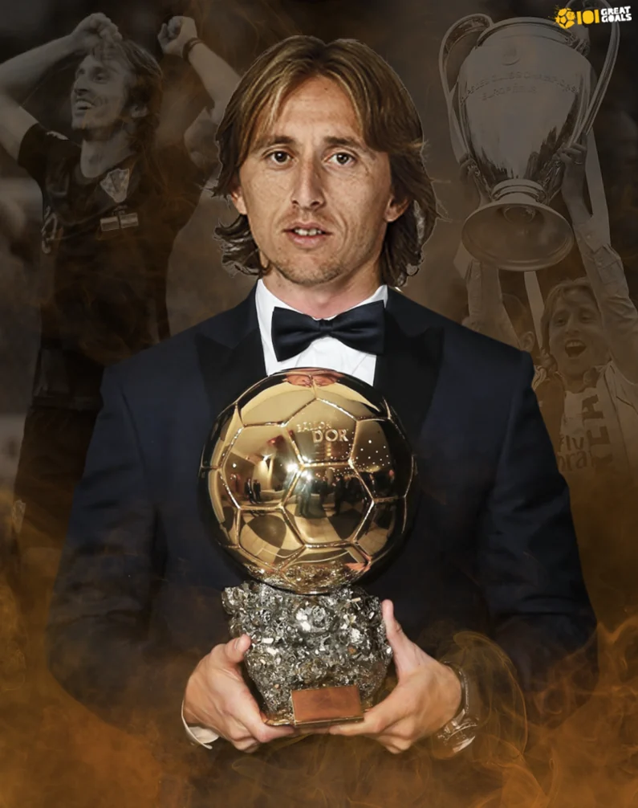

10

Luka Modrić
Croatia · 9 Sep 1985Full name: Luka Modrić
Clubs: Dinamo Zagreb, Tottenham Hotspur, Real Madrid, AC Milan.
Achievements
2018 Ballon d'Or, 2018 FIFA World Cup runner-up, 6 Champions League titles.
Playing style
Exceptional passing, press resistance, vision, technical control and intelligent movement.
Legacy
One of the finest central midfielders of his generation, proving that intelligence and technique can dominate against physically stronger opponents.